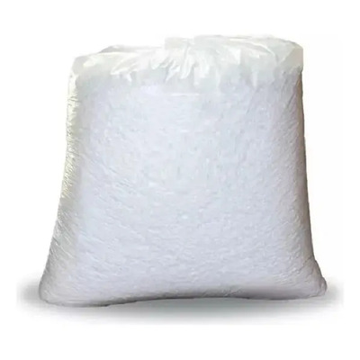

Almofada de Ar vs Isopor
O isopor já foi o padrão ouro da proteção, mas hoje ele representa desperdício de espaço e um pesadelo ambiental.

O isopor (EPS) é conhecido por sua capacidade de amortecimento, mas ele traz consigo problemas que a logística moderna não pode mais ignorar: sujeira, volume excessivo e dificuldade de descarte.
O Problema da Sujeira e Experiência do Cliente
Quem nunca abriu uma encomenda e se deparou com milhares de bolinhas de isopor espalhadas pela casa? Além de ser irritante para o consumidor final, isso passa uma imagem de descuido e falta de modernidade da marca.
A almofada de ar é uma solução limpa. O cliente recebe o produto, fura a almofada e o resíduo plástico resultante é mínimo, ocupando quase nada de espaço na lixeira.
Logística Reversa e Sustentabilidade
O isopor é extremamente difícil de reciclar devido ao seu baixo peso e alto volume, o que torna o transporte para centros de reciclagem inviável financeiramente. Já as almofadas de ar são feitas de polietileno reciclável e, por serem enviadas vazias para a reciclagem, têm uma pegada de carbono muito menor.
Comparativo de Performance
- Isopor: Quebra facilmente, gera resíduos, ocupa muito espaço no estoque.
- Almofada de Ar: Flexível, não quebra, produzida sob demanda, 100% limpa.
Conclusão
Se você busca uma operação clean, eficiente e sustentável, a transição do isopor para a almofada de ar não é apenas uma opção, é uma necessidade estratégica para reduzir custos e melhorar a percepção da sua marca.